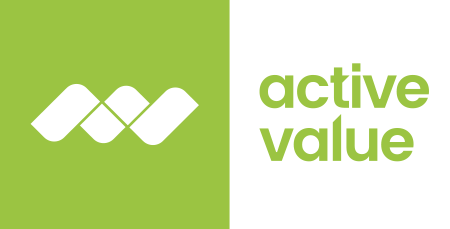

Shift im Verhalten
Recherche startet häufiger in Antworten
Nutzer:innen wollen weniger Listen und mehr Einordnung. Genau dort gewinnen Anbieter, deren Inhalte und Signale maschinenlesbar, präzise und vertrauenswürdig aufgebaut sind.

GEO entscheidet mit darüber, ob Unternehmen in KI-Antworten überhaupt sichtbar werden. Wer dort nicht sauber lesbar, glaubwürdig und inhaltlich anschlussfähig aufgebaut ist, verliert Aufmerksamkeit oft schon vor dem ersten Website-Besuch.
GEO steht für Generative Engine Optimization. Gemeint ist damit die Frage, wie sichtbar eine Marke in Antworten von Systemen wie ChatGPT, Perplexity oder Google AI Overviews wird.
Für viele Unternehmen entsteht gerade eine neue Sichtbarkeitsebene: nicht mehr nur Trefferlisten, sondern verdichtete Antworten, in denen Marken, Produkte und Argumente direkt vorkommen oder eben fehlen.
Nutzer:innen wollen weniger Listen und mehr Einordnung. Genau dort gewinnen Anbieter, deren Inhalte und Signale maschinenlesbar, präzise und vertrauenswürdig aufgebaut sind.
Die inhaltliche Qualität ist oft vorhanden, doch Struktur, Entitäten, Belege und semantische Zuordnung reichen nicht aus, damit KI-Systeme daraus verlässlich Empfehlungen machen.
Gerade in beratungsnahen Themenfeldern können Unternehmen ihre Autorität sichtbar machen, bevor der Markt flächendeckend nachzieht.
„Wer in den Antworten nicht als Lösung erscheint, existiert für einen wachsenden Teil der Zielgruppe schlicht nicht. Die Shortlist wird von der KI vorgefiltert, nicht mehr vom Käufer.“
Nicht nur: „Sind wir bei Google sichtbar?“ Sondern vor allem: „Werden wir in generativen Antworten als plausibler, belastbarer und passender Anbieter genannt?“
Der eigentliche Hebel liegt fast nie in einem einzelnen Trick. Es ist die Kombination aus Struktur, Evidenz, inhaltlicher Klarheit und sauberer Entitätsführung über die gesamte Domain.
| Dimension | Klassische Suchmaschine | KI-System |
|---|---|---|
| Ergebnis | Liste von Links | Synthetisierte Antwort mit zitierten Quellen |
| Ziel | Hohes Ranking → Klick | In der Antwort vorkommen → Empfohlen werden |
| Kernhebel | Keywords, Backlinks, Meta-Tags | Faktendichte, Struktur, Earned Media |
| SEO hilft? | Ja, direkt | Teilweise, aber kein zuverlässiger Proxy für KI-Sichtbarkeit |
83 Prozent der in KI-Systemen zitierten Quellen stehen nicht in den organischen Top 10 von Google. 26 Prozent der Marken haben null Erwähnungen in Google AI Overviews. (BrightEdge 2026, Ahrefs 2025)
Produktdaten, Leistungen, Organisation, Personen, Fragen und thematische Bezüge müssen konsistent ausgezeichnet und logisch verbunden sein.
Gute Seiten beantworten nicht nur Suchwörter, sondern konkrete Entscheidungsfragen, Vergleiche und Einordnungsszenarien.
Studien, Referenzen, Bewertungen, Expertise-Signale und klare Quellen helfen, dass Aussagen in Antworten belastbar zitiert werden können.
| Dimension | Schwach | Solide | Stark |
|---|---|---|---|
| Strukturierte Daten | Nur Standard-Metadaten, keine klare Entitätslogik | Schema teilweise vorhanden, aber inkonsistent | Organisation, Angebot, Fragen und Bezüge sind sauber und durchgängig aufgebaut |
| Antworttiefe | Marketingtexte ohne echte Entscheidungslogik | Einzelne Ratgeber und Vergleiche vorhanden | Inhalte beantworten konkrete Nutzersituationen präzise |
| Vertrauenssignale | niedrig kaum Belege, kaum Autorenklarheit | mittel erste Referenzen, Nachweise und Zahlen vorhanden | hoch Quellen, Expertise und Nachweise sind sichtbar und maschinenlesbar |
| Themenführung | Themen wirken zufällig und fragmentiert | Cluster sind erkennbar, aber nicht vollständig | Klare Themenarchitektur mit nachvollziehbarer Priorisierung |
Genau solche Tabellen müssen auf Mobilgeräten nicht nur kleiner werden, sondern anders funktionieren. Deshalb kippt diese Darstellung unterhalb von 760 Pixeln in lesbare Kartenzeilen um.
Wer wissen will, wie die eigene Marke in KI-Systemen heute tatsächlich erscheint, bekommt mit einem kompakten Check schnell eine belastbare erste Einordnung.
Sie brauchen nur drei Systeme und fünf Fragen. Öffnen Sie ChatGPT, Perplexity und Google AI Overviews jeweils in einem frischen Browserfenster und stellen Sie überall dieselben fünf Fragen:
| Typ | Formulierung |
|---|---|
| Kategorie | „Welche Anbieter für [Ihre Kategorie] sind gut für mittelständische Unternehmen in Deutschland?“ |
| Vergleich | „Welche Anbieter für [Kategorie] in Deutschland sind besonders gut und worin unterscheiden sie sich?“ |
| Use-Case | „Wer kann einem Unternehmen aus [Branche] helfen, [konkretes Problem] zu lösen?“ |
| Problem | „Wie lösen Unternehmen [Kernproblem] und welche Anbieter kommen dafür infrage?“ |
| Empfehlung | „Welche drei Anbieter würden Sie für [Kategorie] empfehlen, wenn ein mittelständisches Unternehmen in Deutschland sucht?“ |
Unter 20 % → kritisch / 20–50 % → Potenzial / Über 50 % → solide
Unter 10 % → schwach
Zeigt, wo konkret verloren wird
Für den Start braucht es keinen Mammutplan, sondern eine Reihenfolge: erst strukturelle Lesbarkeit, dann inhaltliche Antwortfähigkeit, dann laufende Weiterentwicklung.
Ein kompakter Check zeigt, wie sichtbar Ihre Marke in KI-Systemen heute ist und wo die größten Hebel für bessere Empfehlungen liegen.
Der manuelle Test zeigt, wo Sie stehen. Was er nicht zeigt: warum. active value setzt für die professionelle GEO-Analyse auf findAIble, eine spezialisierte Analyse-Plattform. findAIble liefert:
Der einfachste Einstieg ist ein kompakter Check Ihrer Domain. Sie bekommen eine erste Einordnung, wo strukturelle und inhaltliche Hebel liegen.
Sie sehen, ob Ihre Marke in relevanten Antworten überhaupt vorkommt, welche Wettbewerber häufiger genannt werden und wo Ihre Domain bereits als Quelle auftaucht.
Damit wird schnell sichtbar, ob vor allem Struktur, Inhalte, Quellenlage oder die thematische Abdeckung verbessert werden müssen.
Für Unternehmen, die in erklärungsbedürftigen Kategorien arbeiten, im Auswahlprozess gegen starke Wettbewerber antreten oder bereits in Content investieren, aber ihre Sichtbarkeit in KI-Systemen noch nicht systematisch prüfen.
Der kostenlose Check ist die Ersteinschätzung. Wenn sichtbar wird, dass Handlungsbedarf oder Potenzial besteht, kann daraus auf Wunsch ein vertiefendes Starter-Paket werden.